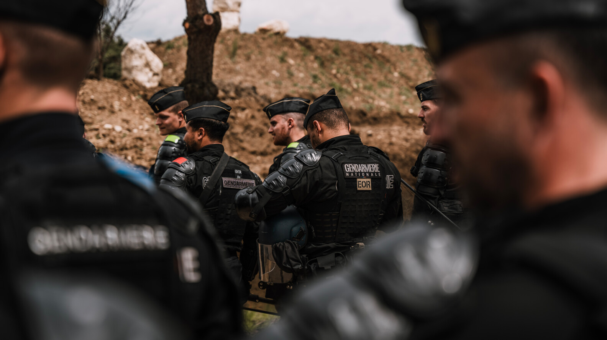
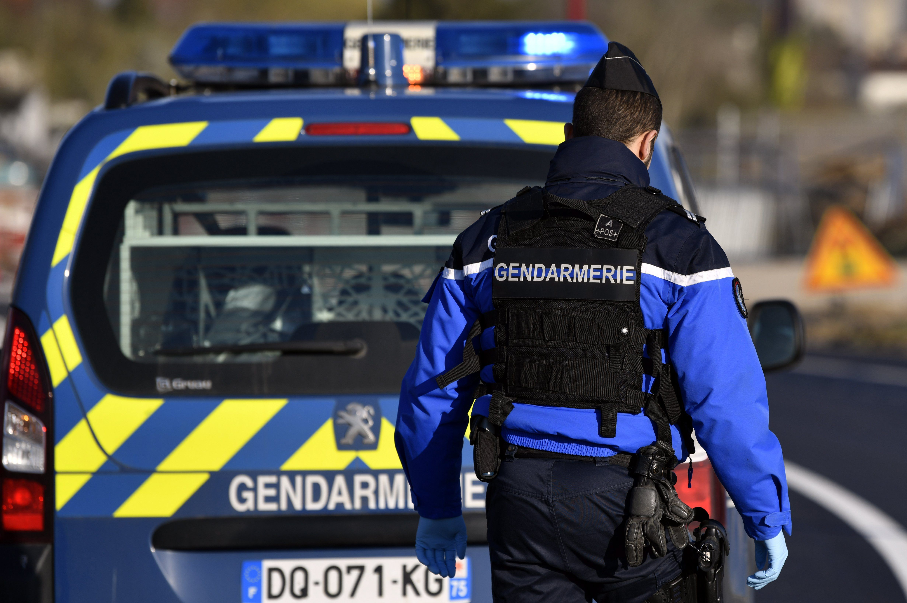
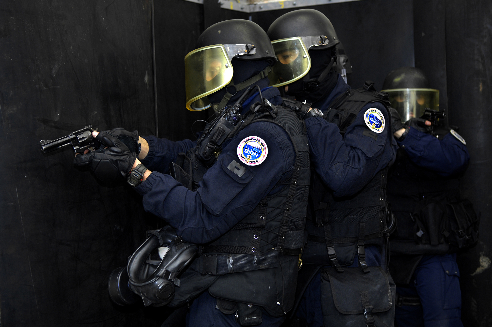
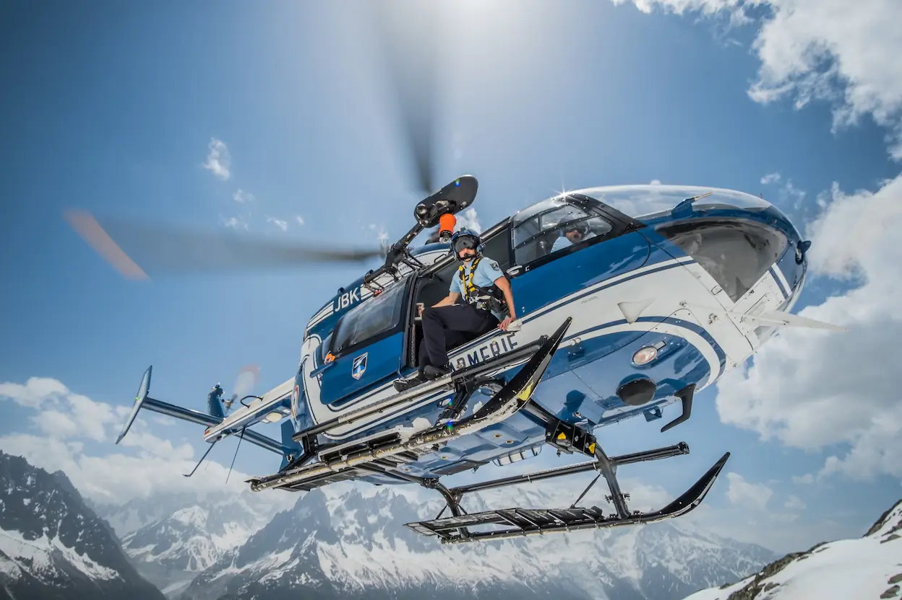
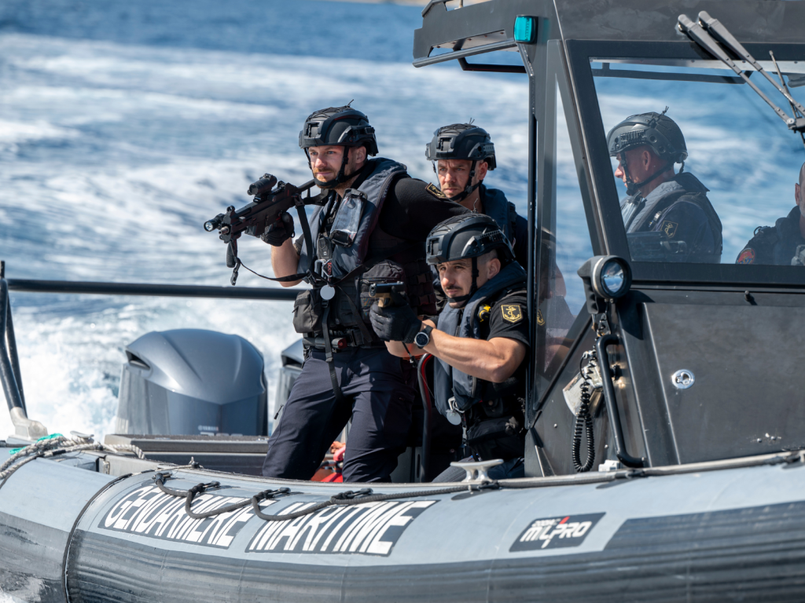

Sécurité intérieure et missions militaires

La gendarmerie départementale assure les missions de police générale sur 95% du territoire. Proximité, réactivité et efficacité au service des citoyens.
Force de maintien de l'ordre et de défense. Intervention lors de troubles à l'ordre public, sécurisation d'événements et missions de protection.

Groupe d'Intervention de la Gendarmerie Nationale. Unité d'élite spécialisée dans la lutte contre le terrorisme et la libération d'otages.

Spécialistes du secours en montagne. Sauvetage, prévention et surveillance dans les massifs montagneux français.

Police des mers et surveillance des activités maritimes. Lutte contre la pêche illégale, contrôle de la pollution marine et sauvetage.
Protection et sécurité des bases aériennes. Police de l'air et des frontières, enquêtes sur les accidents aériens.
Sécurité, proximité et réactivité sur tout le territoire
Patrouilles, surveillance du territoire, prévention de la délinquance et assistance aux populations. Présence permanente dans les communes rurales et périurbaines.
Constatation des infractions, recherche des auteurs, rassemblement des preuves. Sections de recherches et brigades d'enquêtes spécialisées.
Intervention lors de troubles à l'ordre public, sécurisation d'événements majeurs, protection des institutions et des personnalités.
Surveillance des routes, contrôles de vitesse, lutte contre l'alcool au volant. Prévention et éducation à la sécurité routière.